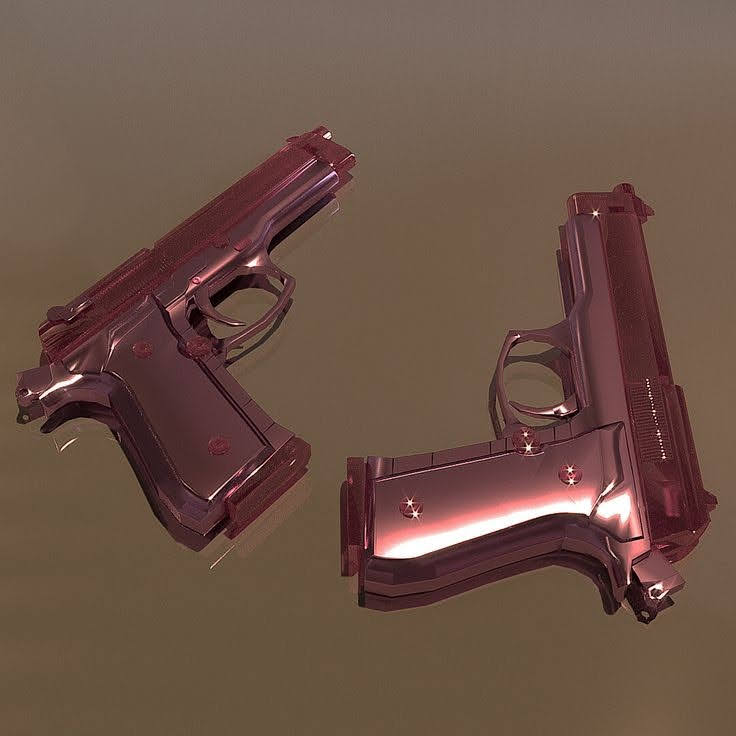

to start my name is Zion (Aka: The ADHQ, The ADHG, UltraVyolet, YoungVeezy, TheVyoletShroom, Once Upon an Ultra) at the time of writing its 1/25/23 i am 16 with a burning passion for all things design.
I also love sports:
Swimming (which I don’t do much anymore)
Skateboarding
Ice skating (which I unfortunately haven’t done since 2017)
Rollerskating
Chess💜 (it’s a sport fight me)
And I have plenty of other hobbies
Drawing
Photography
A little bit of writing
Painting
Electronics and tech
And some obssesions intrests
Weirdcore 👁️
I love the pastel goth style
All types of Metal (trap metal, alt metal, metalcore)
Flowers definitely flowers
(Kinda random but I would love to have these.

Like imagine getting gameended by something so beautiful. Id honestly take it as an honor)
Guess I should also mention my obssesion with internet lore too.
Two years ago it would've been the SCP foundation, right now though its the backrooms and i'm currently in the process of writing a level!
Well two actually...but let me tell you about the one.
I won't say too much but its kind of like level 9 with a twist.
This isnt the exact image but im sure you get the gist of what im thinking about for the level.
Other than that I kind of just go day by day doing chores studying. I'm homeschooled so I just kind of stay in the house all day although it's great and all there have been some downsides…..
Personal issues💓
Due to my rare interaction face to face with people outside of family and neighbors, I've developed social anxiety and paired with my ADHD it hasn’t exactly been easy being me for the last 4 years.
Now don’t me wrong when I say “social anxiety” I don’t mean low self-esteem or low-confidence I radiate high self-esteem and confidence I just have a problem with how i'm perceived in certain public situations and it's hard for me to speak to in select social situations (especially when i’m alone).
It's gotten a lot better now though, but it was really bad to the point where I could barely even go into a store by myself without crying before, during or after the event. Not like full on sobbing (at least not always) but y'know just a few tears here and there.
It's gotten much better now though.
Now I can talk to someone like a school official or Grocery cashier without having a nervous breakdown (getting put on the spot still fucks me up but I think thats normal). I still get nervous sometimes and I don’t go out much but things are better.
What I intend to do with my life💐
Dreams dreams dreams.
Not talking about the ones you have when your body incapacitates itself for up to 12 hours or less I mean hopes and goals for the future mine are simple:
Live well and be happy but how I intend to get there is:
I study really frickin hard
I take the GED test (at least the math portion) sometime between may and june (hopefully before)
I enroll in community college and get my associates in civil engineering
I transfer to USC and get my bachelors in architecture (or masters if want to torture myself)
I become a world famous architect (or not thats fine) and i build my dream house and a dodecahedron shaped building
Edit: I will not be able to take the GED test until next year when im within 60 days of my 18th
Its okay I expected it
I really want to get into DND but im scared of doing it alone i did participate in on session but i probably wont play in another for a good few years.
Here are the Bacstories I wrote for my only two characters:
Lorne Verian Dorei Donner